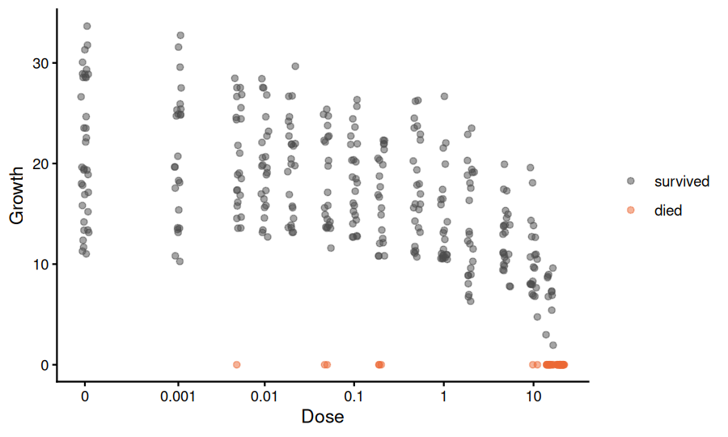
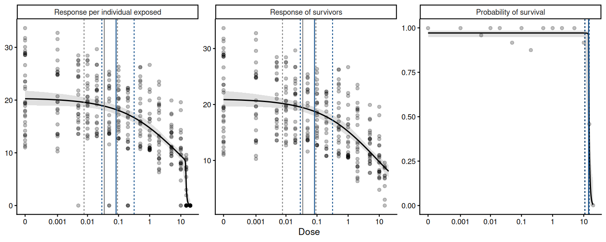
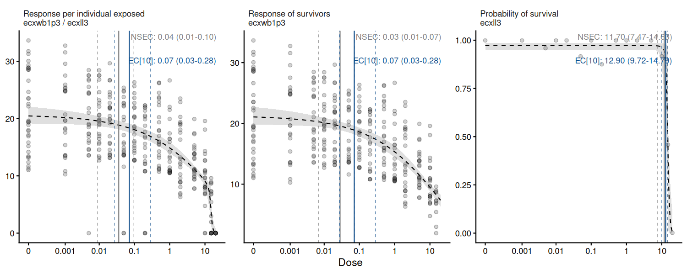

Overview
In some toxicity tests, exposure can both reduce the response and remove the individual that provides it. For example, a snail exposed to a contaminated sediment may grow more slowly or it may die, and an algal culture may be suppressed or it may fail entirely. The conventional analysis discards the individuals that did not survive and fits a zero-bounded model (e.g. a Gamma) to the remainder.
That analysis is not incorrect, but it answers a narrower question than it appears to. Dropping the individuals that died conditions the estimate on survival, so that it describes growth given that the individual lived, and not growth itself. Because mortality also depends on concentration, the snails that survive a high concentration are a more strongly selected group than those that survive a low one, and these groups are not directly comparable in the way a single fitted curve implies.
A hurdle model retains both processes by splitting the likelihood into a response component, which describes the measurement made on the units that provided one, and a zero-probability component, which describes whether a unit provided a measurement at all. It therefore gives three toxicity estimates where the conventional analysis gives one.
| endpoint | question | in bayesnec
|
|---|---|---|
| response of survivors | how much does exposure suppress growth among individuals that live? | which = "growth" |
| survival | how much does exposure kill? | which = "survival" |
| combined | what is the expected response per individual exposed? |
which = "combined" (default) |
The combined endpoint is the one the conventional analysis cannot produce. It is generally the quantity of interest for risk assessment, because it is the expected response over the whole exposed cohort, including the individuals that contributed no measurement.
The response and zero-probability components share no parameters. The hurdle log-likelihood is the sum of a term over all individuals and a term over the survivors only,
log p(y_i) = log Bernoulli(alive_i | 1 - hu_i)
+ 1[y_i > 0] * log Gamma(y_i | mu_i, shape)so with independent priors the posterior factorises. A fit to the survivors only therefore recovers the response component exactly, and is not an approximation to the hurdle model. What such a fit cannot provide is the survival curve or the combined endpoint.
Throughout, the response and zero-probability components are referred to as “growth” and “survival”, after the case these models were written for. Nothing in the implementation is specific to that reading, and any process that produces exact zeros alongside a positive response has this structure (see Other response families for proportions and counts).
To run this vignette we also need
The nassarius data
The nassarius dataset contains four chronic toxicity
tests on the tropical marine snail Nassarius dorsatus (Trenfield et al. 2016), with one row per snail
that entered the experiment. A snail that died is recorded with
alive = 0 and a growth of zero. The contaminants are
anonymised as A–D and the dose units are not stated. Here we use the
test of contaminant D, in which 45 of the 372 snails died.
Each snail that entered the test must be present in the data, with
the dead recorded as zeros. A fit to data from which the dead have been
omitted describes a smaller experiment with less mortality. In this
test, 36 of the deaths were snails absent from the source records, and
were reinstated from the test design (the record column
gives the trace of each death; see Deaths recorded by
omission).
The doses span more than four orders of magnitude, so we fit the
models on a log scale, as in the other vignettes. The control is
recorded as a dose of zero, for which the logarithm is undefined, so we
add 0.0001 (one decade below the lowest dose tested, 0.001) inside the
call to crf(), which is far enough below it to be read as a
control and close enough not to stretch the fitted range. Because the
transformation is written in the formula, bayesnec returns
the estimates and plots on the dose scale (see the Single
model usage vignette). The figures below draw dose on this log
scale, with the control one decade below the lowest dose.
off <- 1e-4
dose_axis <- scale_x_continuous(
"Dose", breaks = log(c(0, 0.001, 0.01, 0.1, 1, 10) + off),
labels = c("0", "0.001", "0.01", "0.1", "1", "10")
)
ggplot(snails, aes(x = log(dose + off), y = growth, colour = alive == 0)) +
geom_point(alpha = 0.5,
position = position_jitter(width = 0.1, height = 0, seed = 1)) +
scale_colour_manual(values = c("grey30", "#eb6834"),
labels = c("survived", "died"), name = NULL) +
dose_axis +
labs(y = "Growth") +
theme_classic()
Growth of the snails in the test of contaminant D. A death is recorded as a growth of zero. Points are jittered horizontally.
Growth declines gradually across the series, from a mean of 21.4 in the controls to 14.1 at a dose of 1 and 6.8 at 15, the highest dose at which any snail survived (figure above). Mortality, in contrast, is concentrated at the top of the series. At doses below 10, 6 snails died, spread over 3 doses with no trend with dose, whereas 2 died at 10, 13 of the 24 at 15, and all 24 at 20. These deaths appear as zeros along the bottom of the plot. No survivor has a growth at or below zero (the smallest is 1.9), so the growth of the survivors can be fitted with a Gamma distribution as recorded.
The factorised route
bayesnec provides two ways of fitting a hurdle model. In
the factorised route, bnec_hurdle() fits two ordinary
bnec() models (a zero-bounded model to the non-zero
responses, and a bernoulli model to the survival indicator
over all individuals) and returns them together as a
bayesnechurdlefit. The combined endpoint is formed
afterwards by multiplying the growth and survival posteriors. The joint
route, which fits both components as one model, is described in The
joint route.
Each component can be given its own equation: crf()
names the equation for growth, and model_survival the
equation for survival. We begin with one equation for each. Growth
declines gradually from the lowest doses and is still declining at 15
(figure above), and we give it the smooth equation ecxll3,
a three-parameter log-logistic equation that falls to zero without
estimating a lower asymptote. Survival, in contrast, changes little up
to a dose of 10 before it falls to zero, and we give it the threshold
equation nec3param. A threshold equation for one component
and a smooth one for the other also show an NEC and an NSEC side by side
(see Endpoints of the factorised fit).
# bayesnec does not set cores; unless mc.cores is set, brms then runs the
# chains one after another. adapt_delta is raised for the reason given below.
fit_f <- bnec_hurdle(
# Write the offset as 0.001 / 10: brms writes 1e-04 into the Stan program
# as `1e - 04`, which Stan cannot parse.
growth ~ crf(log(dose + 0.001 / 10), model = "ecxll3"),
model_survival = "nec3param", data = snails, seed = 10, refresh = 0,
cores = 4, control = list(adapt_delta = 0.999)
)As for any bayesnec fit, the sampler diagnostics should
be checked before the estimates are used (see the Multi
model usage vignette). check_sampling() returns them
for each component.
sampling_f <- check_sampling(fit_f)
sampling_f
#> $growth
#> model max_rhat min_ess min_ess_ratio n_divergent failed
#> 1 ecxll3 1.002435 2521.702 0.3152127 0 FALSE
#>
#> $survival
#> model max_rhat min_ess min_ess_ratio n_divergent failed
#> 1 nec3param 1.005095 476.2915 0.05953644 10 FALSEWe raise adapt_delta from its default of 0.8 to 0.999
for all the nassarius fits because of the survival data at
the top of the series. Survival changes little from the control to a
dose of 10, and then falls to 0.46 at 15 and 0 at 20. Because survival
at 15 is about half its control value of 1, these data locate the
decline at about 15 but do not limit how steeply it falls: a curve that
drops abruptly at 15 fits them about as well as one that falls steadily
from 10 to 20. The sampler is therefore likely to have difficulty where
it explores those steep curves, and the raised setting reduces the step
size it uses there. bnec_hurdle() passes these settings to
both components, so growth is fitted with them too. With these settings
the growth component produced 0 divergent transitions and the survival
component 10, and both components pass every check (table above). The
settings can reduce the number of divergent transitions, but they cannot
limit the steepness of the decline. That requires a further dose between
10 and 15 or between 15 and 20, or an informative prior on the rate of
decline of the survival curve (beta). The other sampler
settings, including the 10,000 iterations, are the bayesnec
defaults.
Endpoints of the factorised fit
summary() returns the no-effect estimate of each of the
three endpoints and, with ecx = TRUE, the ECx at each level
in ecx_vals, measured as a percentage decline from the
fitted control value (table below). nec(),
nsec() and ecx() select one endpoint through
their which argument, with the combined endpoint as the
default.
summary_f <- summary(fit_f, ecx = TRUE, ecx_vals = c(10, 50))
summary_f
#> Object of class bayesnechurdlefit
#>
#> 372 individuals exposed; 45 recorded as zero ( 12.1% )
#>
#> growth : Gamma -- ecxll3
#> survival : bernoulli -- nec3param
#>
#> No-effect toxicity estimates
#> Q50 Q2.5 Q97.5
#> combined (N(S)EC) 0.03 0.01 0.09
#> growth (NSEC) 0.03 0.01 0.09
#> survival (NEC) 14.23 10.65 14.94
#>
#> NSEC values appear where a model set contains smooth (ECx) models, which
#> carry no threshold parameter; N(S)EC is a model-averaged combination
#> of the two (Fisher et al. 2023).
#>
#> ECx estimates
#> Q50 Q2.5 Q97.5
#> combined ec10 0.08 0.03 0.32
#> combined ec50 7.64 5.11 11.10
#> growth ec10 0.08 0.03 0.32
#> growth ec50 7.64 5.11 11.13
#> survival ec10 14.34 10.99 14.94
#> survival ec50 14.90 13.10 15.29
#>
#> The combined endpoint is the expected response per individual exposed,
#> i.e. growth * survival. Use which = to select a component.
#>
#> Fitted by bayesnec 2.1.3.44, installed from a local source, which records no commit, under R 4.6.1.autoplot(fit_f, which = "all") draws the three curves
against the recorded dose, on which the ten lowest doses fall within the
first twentieth of the width. With x_scale = "fitted",
autoplot() instead spaces the curves and the observations
on the scale of the fit, log(dose + 0.001 / 10), and labels
the axis in dose, including the control at zero. It also marks the
no-effect estimate of each endpoint, and with ecx = TRUE
the EC10 (figure below).
autoplot(fit_f, which = "all", x_scale = "fitted", ecx = TRUE, xlab = "Dose")
The combined endpoint (response per individual exposed), growth (response of survivors) and survival of the factorised fit, with the median and 95% credible band of each curve. Grey vertical lines mark the no-effect estimate and its credible limits; blue lines mark the EC10 and its limits. The deaths are the zeros along the bottom of the combined panel, and they are absent from the growth panel. The survival panel shows the proportion surviving at each dose.
The growth estimates are between the doses of 0.02 and 10, because
growth declines gradually over much of the series, whereas the survival
estimates are between 10 and 15, over which survival falls from 0.92 to
0.46 (table and figure above). For example, the EC50 is 7.6 for growth
and 15 for survival. On the combined curve, however, the EC10 and EC50
take their growth values (0.083 and 7.6), and the combined curve follows
the growth curve up to the survival NEC (14) before it falls to zero
with survival. The no-effect estimates are of two kinds, because
nec3param estimates a threshold and ecxll3
does not. summary() therefore labels the growth estimate an
NSEC (Fisher and Fox 2023), the survival
estimate an NEC, and the combined estimate, which is the smaller of the
growth and survival estimates in each posterior draw, an N(S)EC (Fisher et al. 2024). The combined estimate
(0.035) is close to the growth NSEC (0.035), for the reason given
below.
This pattern follows from the definition of the combined curve as the
product of the growth and survival curves. Below the dose at which
survival begins to fall, survival is at its control value, so the
combined curve is a constant multiple of the growth curve. An ECx, which
is a percentage decline from the control, is therefore equal on the
combined and growth curves up to the dose at which mortality begins, and
the growth and combined estimates differ only above that dose. The
no-effect estimate that nec() returns with
which = "combined" is the per-draw minimum of the growth
and survival estimates, and so equals the growth estimate whenever
growth is the more sensitive endpoint. This is usually the case, because
a contaminant that kills has generally slowed growth at a lower dose
first, and it follows from what a threshold is (the dose at which an
effect begins): the combined effect begins as soon as either
process does.
Above the dose at which survival falls, however, the combined curve drops well below the growth curve, and the difference is largest on the response scale. At a dose of 15, for example, where 11 of the 24 snails survived, the median growth of survivors is 8.8, whereas the expected growth per snail exposed is 3.7. These numbers answer different questions, and which is appropriate depends on whether the assessment concerns the individuals that survive or the population that was exposed.
The practical consequence is that a combined no-effect estimate or low-effect ECx, which will generally be close to the growth estimate, is not a reason to fit a hurdle model. The reasons to fit one are the survival curve, which an analysis of the survivors only cannot produce at all, and the effect sizes at doses where mortality is operating, which such an analysis systematically understates. Where mortality begins before growth has fallen by half, the combined EC50 is also lower than the growth EC50, and The hurdle Beta gives a simulated example constructed that way.
Model averaging
As elsewhere in bayesnec, model averaging is the
preferred way of handling uncertainty about the form of the curve (see
the Multi
model usage vignette), and it is as important for the survival
component as for growth. The factorised route makes the full crossed
comparison available, in which each growth equation is paired with each
survival equation. We fit the "decline" group to both
components. model_survival can name a different set for
survival, but neither curve is constrained in advance by these data:
growth of the survivors is observed only up to a dose of 15, so it may
or may not level off above zero, and survival falls to zero, which an
equation that estimates a lower asymptote can also describe.
bnec() drops three equations of the group from each
component: neclin and ecxlin, which are not
valid for a Gamma or Bernoulli response under the identity link, and
ecxsigm, which it does not fit to a negative predictor such
as log(dose + 0.0001).
# The pseudo-BMA weights use a Bayesian bootstrap, which draws from R's random
# number stream.
set.seed(10)
fit_m <- bnec_hurdle(growth ~ crf(log(dose + 0.001 / 10), model = "decline"),
model_survival = "decline", data = snails, seed = 10,
refresh = 0, cores = 4,
control = list(adapt_delta = 0.999))check_sampling() gives the sampler diagnostics for each
equation of the growth and survival sets (table below).
sampling_m <- check_sampling(fit_m)
sampling_m
#> $growth
#> model max_rhat min_ess min_ess_ratio n_divergent failed
#> 1 nec3param 1.002629 1823.844 0.2279805 0 FALSE
#> 2 nec4param 1.002323 2032.782 0.2540978 0 FALSE
#> 3 ecxexp 1.001427 3224.339 0.4030424 0 FALSE
#> 4 ecx4param 1.002173 2520.494 0.3150618 0 FALSE
#> 5 ecxwb1 1.001704 1758.125 0.2197656 0 FALSE
#> 6 ecxwb2 1.001461 3002.143 0.3752678 0 FALSE
#> 7 ecxwb1p3 1.001153 1993.339 0.2491674 0 FALSE
#> 8 ecxwb2p3 1.001604 2307.141 0.2883926 0 FALSE
#> 9 ecxll5 1.002470 1349.681 0.1687101 0 FALSE
#> 10 ecxll4 1.001674 2268.232 0.2835289 0 FALSE
#> 11 ecxll3 1.002435 2521.702 0.3152127 0 FALSE
#> 12 ecxflat 1.001778 2548.752 0.3185940 0 FALSE
#>
#> $survival
#> model max_rhat min_ess min_ess_ratio n_divergent failed
#> 1 nec3param 1.005095 476.29149 0.059536436 10 FALSE
#> 2 nec4param 1.002213 1112.19432 0.139024290 18 TRUE
#> 3 ecxexp 1.078749 35.33660 0.004417075 6886 TRUE
#> 4 ecx4param 1.002185 1814.41538 0.226801922 911 TRUE
#> 5 ecxwb1 1.001495 1499.57394 0.187446743 9 FALSE
#> 6 ecxwb2 1.003233 1402.65127 0.175331409 1065 TRUE
#> 7 ecxwb1p3 1.013816 51.72488 0.006465610 120 TRUE
#> 8 ecxwb2p3 1.003284 1091.15806 0.136394758 1124 TRUE
#> 9 ecxll5 1.008609 643.30677 0.080413347 1001 TRUE
#> 10 ecxll4 1.001835 467.40989 0.058426237 23 TRUE
#> 11 ecxll3 1.002536 1834.76340 0.229345425 0 FALSE
#> 12 ecxflat 1.004722 1612.38942 0.201548678 0 FALSEIn this fit, none of the 12 growth equations and 8 of the 12 survival
equations (nec4param, ecxexp,
ecx4param, ecxwb2, ecxwb1p3,
ecxwb2p3, ecxll5 and ecxll4) fail
at least one check (table above). The survival failures are likely to
follow from the design, because the data do not limit how steeply
survival falls at 15 (see The factorised route). A combination
of a growth and a survival equation should contribute to the model
average only where both equations sampled properly.
screen_models() applies the thresholds of
check_sampling() to each component of a hurdle fit
separately, drops from that component each equation that failed, and
recomputes the weights of the equations that remain. Because each
crossed weight is the product of a growth weight and a survival weight
(see below), a combination that includes a dropped equation is removed
from the crossed table, which is equivalent to giving it a weight of
zero.
set.seed(10)
fit_ms <- screen_models(fit_m)crossed_weights() gives the weight of each remaining
combination (table below). Because the components are independent, the
expected log predictive density of a combination is the sum of those of
its growth and survival equations, and each crossed weight is the
product of a growth weight and a survival weight. The weights of all the
combinations therefore follow from the growth and survival fits, without
fitting each pair. This identity is specific to pseudo-BMA weights, the
bayesnec default, because stacking optimises a different
objective whose solution is not in general a product of this kind.
crossed_ms <- crossed_weights(fit_ms)
round(crossed_ms, 2)
#> survival
#> growth nec3param ecxwb1 ecxll3 ecxflat
#> nec3param 0.00 0.00 0.00 0
#> nec4param 0.00 0.00 0.00 0
#> ecxexp 0.00 0.00 0.00 0
#> ecx4param 0.02 0.01 0.02 0
#> ecxwb1 0.05 0.02 0.07 0
#> ecxwb2 0.01 0.00 0.01 0
#> ecxwb1p3 0.19 0.09 0.26 0
#> ecxwb2p3 0.01 0.00 0.01 0
#> ecxll5 0.01 0.01 0.02 0
#> ecxll4 0.02 0.01 0.03 0
#> ecxll3 0.05 0.02 0.06 0
#> ecxflat 0.00 0.00 0.00 0No growth equation failed a check, so screen_models()
returns the growth weights unchanged. Before screening, the survival
equations that failed a check were given 0.62 of the survival weight,
and screen_models() drops them from the average. After
screening, 4 survival equations remain, and the weight is spread across
their combinations with the growth equations. Of the growth weight after
screening, 0.54 is given to ecxwb1p3 and less than 0.01 to
the threshold equations (nec3param and
nec4param) (table above). The model average is compared
with a single combination in Refitting a selected
combination.
Each model set includes smooth (ECx) equations as well as threshold
equations. The ECx estimates compared in Refitting a selected
combination are read off the model-averaged curves, as for a single
equation. The no-effect estimate that summary() and
nec() report for such a set is a weighted mixture of NEC
and NSEC draws. A smooth equation has no threshold parameter, so its
contribution to that estimate is an NSEC (Fisher
and Fox 2023), not an NEC, and bayesnec refers to
the mixture as the N(S)EC (Fisher et al.
2024). summary() labels each endpoint accordingly,
whereas nec() returns the estimate as an unlabelled vector
with a message to that effect, so summary() is the better
choice where the distinction is important.
autoplot() draws the model-averaged curves of the
screened sets with the arguments used for the single factorised fit
(figure below). bayesnec forms each averaged curve from the
posterior draws of the equations in its set, taken in proportion to
their weights, so its credible band includes the uncertainty about the
form of the curve as well as that about the parameters of each
equation.
autoplot(fit_ms, which = "all", x_scale = "fitted", ecx = TRUE, xlab = "Dose")![The model-averaged combined endpoint (response per individual exposed), growth (response of survivors) and survival of the screened sets, with the median and 95% credible band of each curve. Grey vertical lines mark the no-effect estimate and its credible limits; blue lines mark the EC10 and its limits. Points are the growth of each snail in the combined panel, with the deaths as zeros, the growth of the survivors in the growth panel, and the proportion surviving at each dose in the survival panel.](vignette-fig-exmp6-plot-manec-1.png)
The model-averaged combined endpoint (response per individual exposed), growth (response of survivors) and survival of the screened sets, with the median and 95% credible band of each curve. Grey vertical lines mark the no-effect estimate and its credible limits; blue lines mark the EC10 and its limits. Points are the growth of each snail in the combined panel, with the deaths as zeros, the growth of the survivors in the growth panel, and the proportion surviving at each dose in the survival panel.
On the growth panel, the no-effect estimate of the average is an
N(S)EC of 0.034 (0.0085–0.10), close to the NSEC of ecxll3
in the single factorised fit, 0.035 (0.0077–0.092). On the survival
panel, 0.64 of the weight is given to smooth equations, whose
contribution to the no-effect estimate is an NSEC, so the survival
no-effect estimate of the average is an N(S)EC of 13 (7.3–15). This is
below the NEC of nec3param in the single factorised fit, 14
(11–15), and its interval is 1.8 times as wide. The combined no-effect
estimate of the average is an N(S)EC of 0.034 (0.0062–0.10), close to
its growth estimate.
The joint route
In the joint route, bnec(family = "hurdle_gamma") fits
one model with two parameter blocks. brms names the second
block hu (or zi for the zero-inflated
families), and bayesnec gives that block its own
concentration-response curve, with the block name as a prefix on each of
its non-linear parameters (e.g. top belongs to the response
block and hutop to the survival block). Because the
likelihood factorises, the factorised and joint routes give equivalent
inference, so the choice between them depends on what each can fit.
factorised (bnec_hurdle) |
joint (family = "hurdle_gamma") |
|
|---|---|---|
| different equation on each block | yes, via model_survival
|
yes, via model_survival
|
| model averaging | full crossed set via crossed_weights()
|
response block only |
| coupling the blocks (e.g. shared group-level effect) | no — breaks the factorisation | yes |
| number of fits | two | one |
We recommend the factorised route by default, because it makes the
crossed model comparison tractable. The joint route is needed where the
growth and survival blocks must share structure (e.g. a group-level
effect common to both), which the factorisation cannot express. The
routes are intended to be used in sequence: the model sets are fitted
with bnec_hurdle(), screened with
screen_models() and averaged, a combination is selected
from crossed_weights(), and bnec_joint()
refits that combination jointly, with whatever shared structure is
required.
Survival in the second block
Both routes model the probability of surviving, which declines with
dose, but they arrive at it in different ways. In the factorised route
the second fit has a response of its own: bnec_hurdle()
constructs an alive/dead indicator (1 for alive) and fits
an ordinary bernoulli model to it, so nothing is inverted.
In the joint route, however, hu is a distributional
parameter of the response itself, and brms defines it as
the probability of a zero (i.e. mortality). This definition belongs to
the family and cannot be exchanged for its complement, so
bayesnec writes
hu = 1 - (an ordinary bayesnec equation, parameters prefixed)so that the equation describes the declining survival curve of the
factorised route, while hu keeps the meaning
brms requires. The 1 - makes the joint route
agree with the factorised route, and does not represent a modelling
decision.
Placing the declining curve on survival has three consequences.
First, all 24 equations are available for the second block unchanged.
beta is exponentiated in each equation that includes it, so
the equations can only decline (or, for ecxflat, stay
constant), and none of them can express an increasing mortality curve.
Second, hutop is the control survival, which is near 1, so
it takes the prior a bernoulli fit would use, whereas the
equivalent mortality parameter would lie near its lower bound of 0,
where it samples poorly. Third, ecx() and
nsec() apply unchanged. Both require a declining curve, and
both invert the zero-probability block to survival before computing, so
an EC10 has the meaning here that it has for any other model in the
package. Nothing is lost in exchange, because hunec, the
dose at which survival begins to fall, is also the dose at which
mortality begins to rise. When reading output, note that
hutop and hunec describe survival (e.g. a
hutop near 1 indicates near-complete survival in the
controls).
Refitting a selected combination
Model averaging is done on the factorised fit, because the joint
route can average over the response block only. Where a single fit is
required, best_crossed() identifies the combination with
the largest crossed weight, and bnec_joint() refits a
combination as one two-block model, by default the one
best_crossed() selects. We apply both to the screened sets,
so that the selected combination is one whose growth and survival
equations both sampled properly.
best <- best_crossed(fit_ms)
best
#> $growth
#> [1] "ecxwb1p3"
#>
#> $survival
#> [1] "ecxll3"
#>
#> $weight
#> [1] 0.2554268Here the combination with the largest weight is ecxwb1p3
growth with ecxll3 survival (0.26).
fit_j <- bnec_joint(fit_ms, seed = 10, refresh = 0, cores = 4,
control = list(adapt_delta = 0.999))pull_best() returns the factorised fit of this
combination from the screened sets, without refitting, so the factorised
and joint routes can be compared on one pair of equations. We compare
their EC10 for each endpoint with that of the model average (table
below). A factorised fit selects an endpoint through the
which argument, and a joint fit through dpar,
which names the brms distributional parameter:
"mu" for growth, "hu" for survival, and the
default NULL for the combined endpoint. These arguments are
not interchangeable, so where a component estimate looks like the
combined one, it is useful to check class(fit). Note also
that the no-effect estimate of a joint fit is the combined one, with no
argument for selecting a block: nsec() returns it for any
pair of equations, whereas nec() requires a growth equation
with an nec parameter.
fit_b <- pull_best(fit_ms)
ec10 <- rbind(
`growth, factorised` = ecx(fit_b, which = "growth"),
`growth, joint` = ecx(fit_j, dpar = "mu"),
`growth, model average` = ecx(fit_ms, which = "growth"),
`survival, factorised` = ecx(fit_b, which = "survival"),
`survival, joint` = ecx(fit_j, dpar = "hu"),
`survival, model average` = ecx(fit_ms, which = "survival"),
`combined, factorised` = ecx(fit_b),
`combined, joint` = ecx(fit_j),
`combined, model average` = ecx(fit_ms)
)
signif(ec10, 2)
#> Q50 Q2.5 Q97.5
#> growth, factorised 0.070 0.028 0.28
#> growth, joint 0.072 0.027 0.28
#> growth, model average 0.077 0.028 0.32
#> survival, factorised 13.000 9.900 15.00
#> survival, joint 13.000 9.700 15.00
#> survival, model average 13.000 9.700 15.00
#> combined, factorised 0.070 0.028 0.28
#> combined, joint 0.072 0.027 0.28
#> combined, model average 0.077 0.028 0.32The EC10 medians of the factorised and joint fits of the selected
combination differ by at most 2.6% across the three endpoints (table
above). Both routes fit the equations with identical likelihoods and
priors, so they estimate one posterior, and the difference is therefore
likely to reflect Monte Carlo error. The joint fit produced 1 divergent
transition and passes the checks of check_sampling(), as
both of its equations did in the factorised fit. These results suggest
that the factorised and joint routes differ in the models they can fit,
and not in the estimates they give for a model both can fit.
autoplot() takes the same which argument
for a joint fit as for a factorised one, so the joint refit is drawn as
the factorised pair was (figure below).
autoplot(fit_j, which = "all", x_scale = "fitted", ecx = TRUE, xlab = "Dose",
point_alpha = 0.25)
The combined endpoint (response per individual exposed), growth (response of survivors) and survival of the joint refit, with the median and 95% credible band of each curve. Grey vertical lines mark the no-effect estimate of each panel and its credible limits; blue lines mark the EC10 and its limits. Points are as in the figure of the model average.
On the combined panel the grey lines mark the combined NSEC of the
joint refit, 0.038 (0.012–0.097), and the blue lines its combined EC10,
and the EC10 of each block is in the table above. At a dose of 15, where
survival has fallen to about half its control value, the median expected
growth per snail exposed is 3.5 for the joint refit and 3.6 for the
model average (figure in Model averaging), against 3.7 for the
single factorised fit of ecxll3 with nec3param
(figure in Endpoints of the factorised fit). At this dose,
selecting one combination therefore changes the combined response little
from that of the model average.
The model average gives a growth EC10 of 0.077 (0.028–0.32), against
0.070 (0.028–0.28) for the selected combination alone (table above). The
interval of the model average is wider than that of the selected
combination, which is likely to reflect the 0.46 of the growth weight
given to equations other than ecxwb1p3, whose curves may
begin to decline at different doses.
The equation for each block is set independently, so a joint fit with
any combination can also be requested directly, with crf()
naming the equation for the response block and
model_survival the equation for the survival block.
bnec_joint() is a convenience wrapper that fills in these
names from best_crossed() where they are not given.
bnec(growth ~ crf(log(dose + 0.001 / 10), model = "ecxll3"), data = snails,
family = "hurdle_gamma", model_survival = "nec3param")Selecting a single combination discards the rest of the crossed
table, which is a substantial loss of information where the weights are
spread across several combinations. This step is therefore justified
only where the joint form is needed for a reason the factorisation
cannot accommodate. The main such reason is group-level structure
spanning both blocks, which is supplied through the formula
argument of bnec_joint().
Other response families
Count responses
A structural zero in a count response uses
hurdle_poisson or hurdle_negbinomial, not the
similarly named zero-inflated family. A hurdle states that every zero
came from the survival process. Its positive-count likelihood is
therefore conditional on Y > 0, and the two blocks
factorise. bnec_hurdle() applies trunc(lb = 1)
internally to the growth fit, while the joint hurdle families include
the same normalisation in their density.
zero_inflated_poisson and
zero_inflated_negbinomial apply where the source of a zero
is unknown. An observed zero can then arise from either the count
distribution or the added zero-probability component. The likelihood
contains both possibilities in one mixture term and cannot be fitted as
two independent models. bayesnec fits the
concentration-response curve to the count mean and holds the
zero-inflation probability constant for these families.
For count hurdles, the response of survivors is
E[Y | Y > 0]. bayesnec computes that
quantity exactly from the truncated growth fit’s underlying count
parameters. This avoids the finite upper grid that brms
uses for expected predictions from a general truncated discrete model,
which can omit a substantial negative-binomial tail. For a joint count
hurdle, ecx(dpar = "mu") and nsec(dpar = "mu")
convert the underlying Poisson or negative-binomial mean to the same
conditional mean. The fitted top and bot
parameters of the joint equation remain on the underlying count-mean
scale.
The factorised count route requires brms 2.23.2 or later. Earlier
brms versions used a different lower-bound convention in
log_lik(), so bnec_hurdle() refuses the route
before fitting and points to the corresponding joint hurdle family.
The hurdle Beta
zero_inflated_beta is the direct analogue of
hurdle_gamma for a proportional response bounded on (0, 1),
with a Beta response block for the units that gave a measurement and a
survival block for whether a unit gave one at all. It applies where a
proportion is measured on each unit and some units fail entirely, for
example an algal culture expressed as a proportion of a design ceiling,
with replicates that crashed.
A zero-inflated Gamma or Beta model is identical to the corresponding
hurdle model. Zero-inflation differs from a hurdle only where the base
distribution can itself produce zeros, which the Gamma and Beta
distributions cannot. Consistent with this, the Stan density that
brms generates for zero_inflated_beta is the
hurdle form, with no mixture at zero. bayesnec treats the
zero-inflated and hurdle forms identically and keeps the
brms name, so hurdle_gamma and
zero_inflated_beta differ in name and in the support of the
response, but not in structure.
In practice, however, the conditions under which this family is appropriate are more restrictive than they first appear, and the most likely misuse is to choose it simply because a proportion contains some zeros.
Conditions for a hurdle Beta
A hurdle Beta is appropriate only where all of the following conditions are met:
- the proportion has a denominator that is fixed by design or measured per unit, and is not a control mean or an observed maximum (see Unavoidable divisors in the Single model usage vignette);
- the response declines, matching the convention of the
bayesnecmodel set; - the zeros are structural, produced by a process that genuinely fails; and
- there is no mass at 1.
The last condition is the one that limits use of the family in practice, and it fails for structural reasons, not by accident:
- if the denominator is the unit’s own baseline, the response can exceed it and produce values at or above 1, and capping these at 1 converts the excess into a spike at the boundary (i.e. flooring, discussed below, applied at the other end of the scale);
- if the “nothing happened” state is at the top of the scale, the inflation is at 1 and not at 0, which requires a different family; and
- if the response is genuinely a count out of a known total, the binomial is already correct and no Beta is needed.
A response inflated at both boundaries requires
zero_one_inflated_beta or an ordered-Beta treatment, and
these are not available in bayesnec. A response that is a
ratio to a per-unit baseline is often better modelled with
hurdle_gamma on the uncapped ratio.
A simulated example
No dataset shipped with bayesnec satisfies all four
conditions, nor did any of the candidates considered while this vignette
was written, and the mass-at-1 condition is the one that failed, for the
structural reasons given above. The example below is therefore
simulated, and constructed to meet all four conditions. It shows what
the family does where it applies, and it is not evidence that any
particular real dataset qualifies, so the conditions above should still
be checked before the family is used.
The scenario is an algal growth-rate test. Growth is expressed as a
proportion of a ceiling fixed in advance by the test protocol (i.e. not
a control mean and not the observed maximum, as the first condition
requires). A culture that crashes contributes an exact zero, and a
culture that grows contributes a proportion drawn from a Beta
distribution, which cannot itself return a zero, so each zero in the
data is structural. The concentrations are a twofold dilution series
with a control (0 and 1 to 64), and we generate and fit both curves on
log(x + 1), on which the series is close to evenly spaced.
An offset of one is reasonable here because one is the lowest
concentration tested, and it places the control one step below it.
set.seed(101)
nec3 <- function(x, top, beta, nec) {
top * exp(-exp(beta) * (x - nec) * (x > nec))
}
# Growth declines gradually from a control proportion of 0.70, with a threshold
# at a concentration of 3. Every culture grows up to a concentration of 6, above
# which they crash in increasing numbers, before growth has fallen by half.
growth_true <- function(x) {
nec3(log(x + 1), top = 0.70, beta = log(0.37), nec = log(3 + 1))
}
survival_true <- function(x) {
nec3(log(x + 1), top = 1, beta = log(0.7), nec = log(6 + 1))
}
conc <- rep(c(0, 1, 2, 4, 8, 16, 32, 64), each = 16)
alive <- rbinom(length(conc), 1, survival_true(conc))
# 30 is the Beta precision: higher values give tighter scatter about mu.
prop <- rbeta(length(conc), growth_true(conc) * 30,
(1 - growth_true(conc)) * 30)
zib_dat <- data.frame(x = conc, y = ifelse(alive == 1, prop, 0))Two of the conditions can be checked directly from the data: that there is no mass at 1, and that the zeros are confined to crashed cultures, not small measurements.
c(n = nrow(zib_dat),
zeros = sum(zib_dat$y == 0),
max = round(max(zib_dat$y), 3),
at_or_above_1 = sum(zib_dat$y >= 1))
#> n zeros max at_or_above_1
#> 128.000 33.000 0.877 0.000
table(dose = zib_dat$x, measured = zib_dat$y > 0)
#> measured
#> dose FALSE TRUE
#> 0 0 16
#> 1 0 16
#> 2 0 16
#> 4 0 16
#> 8 2 14
#> 16 7 9
#> 32 11 5
#> 64 13 3The largest observed proportion is 0.88 and no value is at or above 1, so there is no spike at the boundary for the Beta to accommodate. Cultures crash at the top four concentrations, in increasing numbers instead of all at once, and at least 3 of the 16 grew at every concentration, which leaves the response block with data at each dose and the survival threshold identifiable (table above).
bnec_hurdle() takes the data unchanged. It selects the
response family from the non-zero rows, and so chooses a Beta here,
where it chose a Gamma for the snail growth. The joint route would
instead name the family, as family = "zero_inflated_beta",
and its second block is named zi, not hu, so
the survival parameters appear as zitop,
zibeta and zinec.
zib_f <- bnec_hurdle(y ~ crf(log(x + 1), model = "nec3param"),
data = zib_dat, seed = 101, refresh = 0)
# The generating EC50 is the concentration at which a generating curve falls to
# half its value at the control. The combined curve is growth times survival.
ec50_true <- function(f) uniroot(function(x) f(x) - f(0) / 2, c(0, 64))$root
generating <- c(3, 6, 3, ec50_true(growth_true), ec50_true(survival_true),
ec50_true(function(x) growth_true(x) * survival_true(x)))
zib_est <- rbind(
`growth nec` = nec(zib_f, which = "growth"),
`survival nec` = nec(zib_f, which = "survival"),
`combined nec` = nec(zib_f),
`growth ec50` = ecx(zib_f, which = "growth", ecx_val = 50),
`survival ec50` = ecx(zib_f, which = "survival", ecx_val = 50),
`combined ec50` = ecx(zib_f, ecx_val = 50)
)
data.frame(generating = signif(generating, 3), signif(zib_est, 3))
#> generating Q50 Q2.5 Q97.5
#> growth nec 3.0 1.93 1.15 2.98
#> survival nec 6.0 6.44 3.71 11.80
#> combined nec 3.0 1.93 1.15 2.97
#> growth ec50 25.0 28.00 19.70 45.90
#> survival ec50 17.8 19.20 13.40 32.00
#> combined ec50 10.0 10.30 7.94 14.30The combined no-effect estimate is the per-draw minimum of the growth and survival NECs, so its generating value is the smaller threshold, 3. Each generating value lies inside its 95% credible interval except that of the growth NEC and the combined no-effect estimate (table above). In this simulated data set the mean of the cultures that grew is 0.73 at the control and 0.69 at a concentration of 2, whereas the generating curve is at 0.70 for both, so the data decline from below the generating threshold, and the growth NEC is estimated below it. The precision of the thresholds is limited by the design, not by the family. A threshold model can locate a change point only as sharply as the dose spacing around it allows. The generating growth threshold of 3 falls in the gap between the doses at 2 and 4, and the survival threshold of 6 in the gap between 4 and 8, and with nothing observed inside a gap the likelihood is nearly flat across it. The survival NEC, 6.4 (3.7–12), is the less precise of the two, because each culture contributes only whether it grew. Where a threshold is the quantity of interest, placing doses around it is therefore likely to narrow its interval more than extra replication elsewhere.
The EC50 is where survival changes the combined estimate. Growth declines gradually from a concentration of 3 and has fallen by half only at about 25, whereas the cultures begin to crash above 6. At the concentration at which growth has halved, only 40 per cent of cultures grow at all, so the combined curve falls to half its control value at a lower concentration: the combined EC50 is 10 (7.9–14), against 28 (20–46) for growth and 19 (13–32) for survival (table above). The combined no-effect estimate, 1.9 (1.1–3.0), is in contrast equal to the growth NEC, because growth begins to decline at a lower concentration than survival, as it did for the snails.
autoplot() draws the three curves of the factorised fit
(figure below), and with ecx = TRUE and
ecx_val = 50 it marks the EC50 of each panel beside the
no-effect estimate it draws by default. On the log1p axis,
which is log(x + 1) and so the scale of the fit, the
control and the doses of the series are spaced as they were fitted. The
combined curve follows the growth curve up to the survival NEC, and
above it falls further than growth as the cultures crash. At 64, for
example, the median proportion achieved by cultures that grew is 0.28,
whereas the expected proportion per culture started is 0.058.
autoplot(zib_f, which = "all", ecx = TRUE, ecx_val = 50,
xlab = "Concentration") +
scale_x_continuous(transform = "log1p",
breaks = c(0, 1, 2, 4, 8, 16, 32, 64))![The simulated hurdle Beta. The combined endpoint (response per individual exposed) is the expected proportion per culture started, growth (response of survivors) the proportion achieved by cultures that grew, and survival the probability of a culture growing at all. Grey vertical lines mark the NEC of each panel and its credible limits (on the combined panel, the per-draw minimum of the growth and survival NECs), and blue lines the EC50 and its limits. Concentration is drawn on a log(x + 1) axis, the scale of the fit.](vignette-fig-exmp6-zib-plot-1.png)
The simulated hurdle Beta. The combined endpoint (response per individual exposed) is the expected proportion per culture started, growth (response of survivors) the proportion achieved by cultures that grew, and survival the probability of a culture growing at all. Grey vertical lines mark the NEC of each panel and its credible limits (on the combined panel, the per-draw minimum of the growth and survival NECs), and blue lines the EC50 and its limits. Concentration is drawn on a log(x + 1) axis, the scale of the fit.
The origin of the zeros
A hurdle model assumes that each zero is structural, i.e. that it marks a unit that died or failed. A zero in concentration-response data can instead be a value rounded down at the recording resolution, a negative value replaced by zero, or a genuine measurement near zero. Conversely, a death can be recorded by leaving the unit out of the data, so that the zero it should contribute is missing. The subsections below describe how to recognise each case.
Zeros from rounding
bayesnec ships the herbicide dataset (Jones and Kerswell 2003), which contains 23
zero values in fvfm (maximum quantum yield). These zeros
appear to make the data candidates for zero-inflation. However, they are
not, and fitting zero_inflated_beta to them would be
misleading.
data(herbicide)
herbicide |>
group_by(herbicide) |>
summarise(n = n(), zeros = sum(fvfm == 0),
min_nonzero = min(fvfm[fvfm > 0]), .groups = "drop")
#> # A tibble: 7 × 4
#> herbicide n zeros min_nonzero
#> <chr> <int> <int> <dbl>
#> 1 ametryn 96 12 0.01
#> 2 atrazine 84 0 0.04
#> 3 diuron 72 0 0.02
#> 4 hexazinone 76 1 0.01
#> 5 irgarol 72 10 0.01
#> 6 simazine 72 0 0.16
#> 7 tebuthiuron 108 0 0.04Two features of the data indicate the origin of these zeros. First, each value is a multiple of the recording resolution, and the smallest non-zero value is equal to one unit of that resolution.
nonzero <- herbicide$fvfm[herbicide$fvfm > 0]
c(resolution = min(diff(sort(unique(nonzero)))),
smallest_nonzero = min(nonzero))
#> resolution smallest_nonzero
#> 0.01 0.01A recorded 0.00 therefore means that the true value was
below 0.005. It does not mark a distinct event, but a measurement that
was rounded down.
Second, the zeros appear only where the curve falls below the rounding floor (0.005). Diuron has no zeros, and its means decline smoothly and level off above the floor (0.043 at the highest concentration, 30), whereas zeros appear only for the more potent compounds (ametryn, hexazinone and irgarol), whose curves go lower. Diuron was tested with the organisms and the instrument used for the other herbicides, and yet its data contain no zeros.
herbicide |>
filter(herbicide == "diuron") |>
group_by(concentration) |>
summarise(mean_fvfm = round(mean(fvfm), 3), .groups = "drop")
#> # A tibble: 6 × 2
#> concentration mean_fvfm
#> <dbl> <dbl>
#> 1 0.1 0.698
#> 2 0.3 0.639
#> 3 1 0.491
#> 4 3 0.27
#> 5 10 0.092
#> 6 30 0.043Fitting a hurdle model to these data would give the zi
block its own NEC and ECx for the probability of rounding to
zero, which is a measurement artefact and not an endpoint. In
addition, the mu block would be biased upward at high
concentrations, because conditioning on y > 0 truncates
precisely the smallest values.
Each of these zeros is instead a value known only to lie in
[0, 0.005), i.e. a censored observation (see the Censoring
section of vignette("example1")). The default
bayesnec behaviour of nudging zeros to
min(y[y > 0]) / 10 is crude, but defensible in this
case, because 0.001 falls inside the true interval. The herbicide fits
of vignette("example4") treat these zeros as left-censored
at 0.005 instead.
The diagnostic for this case is a comparison of the gap between zero and the smallest non-zero value against the resolution the data were recorded at. Where the gap is much greater than the resolution, the zeros mark a distinct process and a hurdle model applies. Where the gap is approximately equal to the resolution, the zeros are rounding or censoring, and a hurdle model does not apply.
gap_ratio <- function(y) {
y <- y[!is.na(y)]
nonzero <- y[y > 0]
resolution <- min(diff(sort(unique(nonzero))))
min(nonzero) / resolution
}
c(herbicide = gap_ratio(herbicide$fvfm),
simulated = gap_ratio(zib_dat$y))
#> herbicide simulated
#> 1.0 125523.1A ratio near 1 (as for herbicide) indicates that the
smallest non-zero value is one rounding unit above zero, so zero is
simply the next value down. A large ratio (about 125,520 for the
simulated hurdle Beta data) indicates a real gap between “no response”
and “the smallest response that was measured”.
Zeros from flooring
The gap diagnostic tests whether the zeros are separated from the continuum of measured values. It does not test how many causes the zeros have, and no test computed on the processed data can do so. This is the second thing to establish, and it is a question of provenance (i.e. how the data were recorded and prepared), not of computation.
| state | true value | kind of zero |
|---|---|---|
| individual died / replicate failed | undefined | structural |
| individual shrank / population declined | negative | floored — a substituted value |
| no measurable change | ≈ 0 | genuine |
A hurdle model assumes structural zeros. Growth endpoints, however, frequently contain floored zeros, because negative growth rates, yields or increments are routinely replaced with 0, or nudged to a small positive value, so that a zero-bounded family will accept them. Three things go wrong at once when a floored response is analysed:
- a living, measured individual is assigned to the state of a dead one;
- the response block conditions on
y > 0, so the “response of survivors” silently becomes the “response of those that happened to increase”, which is selection on the outcome, and because decline is concentration-dependent this bias grows with dose; and - the zero-probability block then mixes failure with decline, and describes neither.
The biases in the response and zero-probability blocks run in one direction and both increase with dose, so the fitted curves for these blocks are pulled apart precisely where the toxicological signal is strongest.
Flooring is substitution at a boundary, and the case against substitution is well established: it fabricates data, biases statistics and obscures real relationships (Helsel 2006). Establishing which kind of zero is present before choosing a model is standard advice (Blasco-Moreno et al. 2019; Martin et al. 2005), as is the warning that many zeros do not by themselves indicate zero inflation (Warton 2005).
The regulatory standard also advises against substitution, and for
the same reason. OECD TG 201 (OECD 2026)
defines growth endpoints that admit negative values, namely the average
specific growth rate, µ = (ln X_j − ln X_i)/(t_j − t_i)
(eq. 1, ¶49), and the yield (the biomass at the end of the test minus
the biomass at the start, ¶53). Annex 5 is explicit about values that
fall outside the expected range, stating both what to do with them and
what not to do:
Negative inhibitions may be a problem with for instance the log-normal distribution function likewise demanding an alternative regression function. It is not recommended to assign a zero or small positive value to such negative values because this distorts the error distribution.
These sentences concern negative inhibition (growth stimulation at low concentrations), not negative growth rates, so they are not a ruling on this case. However, the reason and the remedy are both general, and both apply here: change the function, not the values.
The meaning of “distorts the error distribution”
The phrase is precise, and not rhetorical. Write µ(x)
for the fitted mean at concentration x, σ for
the residual scale and f for the density. For a unit whose
growth was measured as some negative value y, keeping the
value and flooring it contribute differently to the likelihood:
| treatment | contribution | what it asserts |
|---|---|---|
keep y, on a real-line scale |
f(y; µ(x), σ) |
the true value is y — true |
| floor to zero | f(0; µ(x), σ) |
the true value is 0 — false |
The first row is the remedy the guideline points to (i.e. keep the
value, and choose a regression function able to accommodate it). Its
contribution is largest when µ(x) is near y,
so the fitted curve is free to follow the data down. Flooring (the
second row) replaces this with a contribution that is largest when
µ(x) is near zero, so each floored observation pulls the
curve up toward zero. Because floored values cluster at the top of the
concentration range, that pull is concentrated precisely where the
response is changing fastest, and the result is a fit biased upward in a
dose-dependent way. This is what distorting the error distribution
amounts to in practice.
The three failures listed above for a floored response all follow from the way a hurdle model allocates observations between its two blocks. This bias, in contrast, originates in the likelihood contribution of the substituted value itself, and is therefore present in an ordinary regression that has no zero-probability block at all. Fitting a simpler model does not avoid it.
The provenance question
Can this endpoint take negative values in principle? Rates, increments, differences and yields all can. If it can, and the data as supplied contain zeros but no negative values, the zeros should not be accepted as structural until it has been established how negative values were handled, either from the raw measurements or from whoever prepared the data.
In the nassarius data, for example, growth can be
negative in principle, and 4 survivors across the four tests are
recorded with a negative growth, which indicates that negative values
were not floored upstream and that the zeros are deaths. Zeros of
different origin cannot be distinguished once written to file. The gap
test and the provenance question are complementary: the gap test asks
whether the zeros are distinct from the continuum, and the provenance
question asks whether they are distinct from each other.
Recommended handling
We recommend two ways of handling a growth endpoint that can fall below zero, depending on what the assessment requires:
- Where the values were measured and can be kept, do not floor them. Model the response on a scale that admits them, with a family on the real line.
- Where a strictly positive scale is required, model the response relative to each unit’s own baseline.
The first recommendation keeps the values as measured (e.g. a
specific growth rate, or the raw increment), and uses an equation with a
lower asymptote (e.g. nec4param or ecx4param)
so that the curve can cross zero. On a Gaussian response
bayesnec also fits the zero-bounded equations, whose curves
cannot fall below zero, and the model weights then assess that shape
against the data. Any hurdle should be driven by the recorded failure
indicator, not by y == 0.
Under the second recommendation the only zeros are genuine failures,
and hurdle_gamma is correct. Note that the ECx must then be
defined on the derived increment, because a 50% reduction in a
ratio and a 50% reduction in the increment are
different quantities, and can differ by more than an order of
magnitude.
Deaths recorded by omission
Deaths are often recorded by omission or by a sentinel code, not as
zeros, and must be reconstructed before fitting.
bnec_hurdle() requires each unit that entered the
experiment to be present in the data, with 0 recorded for
those that gave no response. Rows omitted, instead of recorded as zero,
cannot be distinguished from rows that were never run, and would be read
as a smaller experiment instead of as additional zeros.
Common traces to look for include:
- sentinel codes, often one constant per test run, well below the real data (a large gap between the sentinel and the next real value makes these unambiguous);
- blank replicates within a tank or plate that is present;
- absent tanks or plates within a treatment that is present, where the whole unit failed; and
- an omitted top concentration, where all units died and the treatment does not appear in the file.
The last of these is the easiest to miss and has the greatest consequence where the omitted concentration is the lowest one at which all units died, because the information about where survival collapses comes from the doses between the last with full survival and the first with none. Concentrations above that one, at which all units also died, are likely to change the survival estimates much less. The test of contaminant D is an example: all 24 snails at a dose of 20 are absent from the source records, and without them the data would end at 15, where 11 of the 24 snails survived.